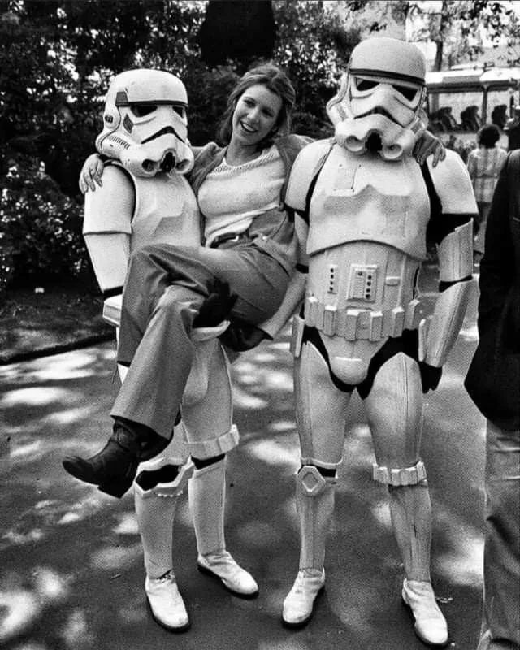

Contexte & Objectifs
Ce projet vient de la SAE 1.05, en première année de BUT MMI à l'IUT de Troyes (Université de Reims Champagne-Ardenne). Le sujet était libre, la contrainte technique ne l'était pas : des pages rendues côté serveur en PHP, et les données rangées dans un fichier JSON plutôt que dans une base SQL. Fan de science-fiction, j'ai pris Star Wars comme thème.
L'intégration HTML/CSS comptait, mais la SAE portait surtout sur l'architecture. Le contenu était généré à la volée, le formulaire traité côté serveur, la galerie alimentée par les mêmes données JSON.
- SAE 1.05, 1re année de BUT MMI, IUT de Troyes (URCA)
- S1 2025-2026, projet individuel
- Rôle : développeur web full-stack
- Objectif : rendre le site dynamique avec PHP et JSON
- Technologies : HTML5, CSS3, PHP 8, JSON
Démarche & Architecture
J'ai commencé par écrire le fichier JSON : personnages, vaisseaux, citations. Chaque page PHP le lit et construit son HTML avec des boucles. Le formulaire passe par des paramètres GET pour afficher ses messages après l'envoi.
Formulaire PHP
Tout se joue côté serveur : contrôle des erreurs et messages de retour passés en GET. Aucun JavaScript nécessaire.
Données JSON
Personnages, vaisseaux, citations : tout est lu dans le fichier puis injecté dans les templates PHP.
Galerie dynamique
La galerie est construite à partir des données JSON. Ajouter un personnage au fichier suffit à le faire apparaître sur le site.
Le site en images

Bilan & Apprentissages
Ce que j'en retiens, c'est la séparation entre les données et leur affichage, plus que PHP en lui-même. En prenant le JSON comme source unique, j'ai compris ce que font les CMS et les APIs, avant même d'en utiliser un pour de vrai.
Les erreurs de formulaire gérées à l'ancienne, via GET, m'ont aussi étonné : pas de dépendance à JavaScript, et ça fonctionne même sur un navigateur limité.
- AC14.01. Mettre en place un environnement de développement web
- AC14.02. Produire des pages web statiques et dynamiques
- AC11.01. Analyser un besoin et formaliser une solution technique
- AC21.01. Développer à l'aide d'un langage de script côté serveur